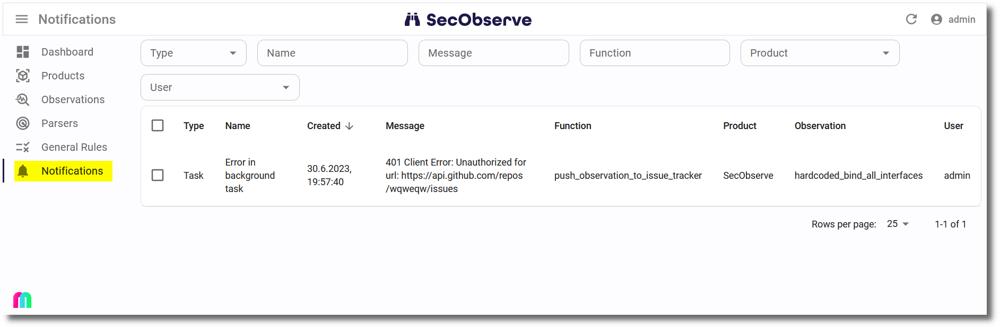

Notifications
SecObserve notifies about events that happen to observations, products and the system itself. There are two groups of notifications, which are configured independently of each other:
- Shared notifications are configured by an administrator or a product owner and are sent to shared destinations: a list of email addresses, a Microsoft Teams channel or a Slack channel. Everybody who can read that mailbox or channel gets the notification.
- User specific notifications are configured by each user for themselves and are sent as email to that user only.
This page describes which events are notified and who receives them. How the delivery to email, Microsoft Teams and Slack is set up is described in Notification channels.
Which events are notified
| Event | Shared channels | User email | Configured in |
|---|---|---|---|
| A new observation has been stored, or an observation has changed | Email, MS Teams, Slack | Notifications for observations | |
| An observation fell out of the notifications | Email, MS Teams, Slack | Notifications for observations | |
| A new observation title has been stored, or data of an observation with this title has changed | Email, MS Teams, Slack | — | Notifications for observation titles |
| The security gate of a product has changed | Email, MS Teams, Slack | Notifications for security gates | |
An observation has been set to the status In review |
— | User specific notifications | |
| An assessment needs approval | — | User specific notifications | |
| An assessment has been approved or rejected | — | User specific notifications | |
| A product rule needs approval | — | User specific notifications | |
| A product rule has been approved or rejected | — | User specific notifications | |
| An exception occurred while processing a request | Email, MS Teams, Slack | — | Notifications for exceptions |
| An exception occurred in a background task | Email, MS Teams, Slack | — | Notifications for exceptions |
Shared notifications
These notifications are configured by an administrator or a product owner, either in the settings of a product and its product group or globally in the Settings. The recipients do not decide themselves whether they get them. How the shared destinations are set up is described in Notification channels.
Notifications for observations
To send notifications for new or changed observations, it must be specified in the settings of the product or the product group, which observations will be notified. There are 3 attributes available:
| Attribute | Description |
|---|---|
| Minimum severity | A notification is sent when the observation has at least this severity. Example: if the minimum severity is High, there will be notifications for all observations with severity Critical or High. |
| Statuses | A list of statuses the observation must have to be notified. If this field is empty, notifications are sent for the 3 active statuses Open, Affected and In review. |
| Minimum priority | A notification is sent when the observation has at least this priority. Example: if the minimum priority is 3, there will be notifications for all observations with priorities 1, 2 or 3. |
Warning
At least one of the 3 attributes has to be set, otherwise no notifications for observations are sent at all. Leaving all of them empty switches the notifications off, it does not fall back to the 3 active statuses.
If an attribute is not set for the product, the value of its product group is used, see Product groups.
An observation is only notified again when its severity, status or priority has actually changed since the last notification, so that repeated imports of the same observation do not repeat the notification. When an observation that has been notified before does not match the attributes anymore, a last notification is sent that the observation fell out of the notifications.
Notifications for security gates
A notification is sent when the security gate of a product changes, either from passed to failed or the other way round. There is nothing to configure for it: as soon as an email address, a Microsoft Teams webhook or a Slack webhook is set for the product or its product group, the notification is sent to that destination. Users that have switched on Security gate changed in their user specific notifications are notified as well.
Notifications for observation titles
Notifications for observation titles are an aggregation of notifications, by grouping observations with the same title. They are not configured per product, but globally in the Settings, because their purpose is to see a vulnerability appearing across all products. There are 4 attributes available:
| Attribute | Setting |
|---|---|
| Minimum severity | Minimum severity for observation title notifications |
| Statuses | Statuses for observation title notifications |
| Minimum priority | Minimum priority for observation title notifications |
| Parser type | Parser type for observation title notifications: a notification is sent when the parser used for this observation has the specified type. |
The first 3 attributes work in the same way as for notifications for observations, including the rule that at least one of the 4 attributes has to be set for any notification to be sent.
A title is only notified again when the severity, status or priority of an observation with this title has changed since the last notification. Unlike for observations, there is no notification when a title falls out of the notifications.
User specific notifications
Every user can decide for themselves which events they want to be notified about, per product and per product group. These notifications are always sent as email to the address of the user.
The settings
| Setting | Event | Additional condition |
|---|---|---|
| Security gate changed | The security gate of the product has changed | — |
| Observation new or changed | An observation has been created or changed, or has fallen out of the notifications | The observation must match the notification settings of the product |
| Observation to be reviewed | An observation has been set to the status In review |
The user needs the permission to assess observations |
| Assessment to be reviewed | An assessment has been created that needs approval | The user needs the permission to approve assessments and is not the author of the assessment |
| Assessment approval receipt | An assessment has been approved or rejected | Only the author of the assessment is notified |
| Product rule to be reviewed | A product rule has been created or changed and needs approval | The user needs the permission to approve product rules and is not the author of the rule |
| Product rule approval receipt | A product rule has been approved or rejected | Only the author of the rule is notified |
All settings are switched off by default, so a user who never changes them is never notified.
Where the settings are made
| Where | What it does |
|---|---|
| User menu → Settings → Notifications | The default settings of the user, used for all products and product groups the user has not overridden. |
| Product group → Notifications tab | Overrides the default settings for this product group and all its products. |
| Product → Notifications tab | Overrides the settings of the product group, or the default settings if the product has no product group. |
The settings are inherited from top to bottom: a product uses the settings of its product group if the user has overridden them there, otherwise the default settings of the user. Each level shows the settings it inherits next to its own settings, and the switch Override ... decides which of them is used. When the override is switched on, the settings are created with the values that are currently inherited, so switching it on never changes what is notified. When it is switched off again, the settings of the level are deleted and the inherited settings are used again.
Who is notified
A user is only notified for a product if all of the following are true:
- The setting for the event is switched on for this product, after the inheritance described above has been applied.
- The user is a member of the product or of its product group, either directly or through an authorization group.
- The user is active and has an email address.
- The user has the permission required for the event, if there is one.
Notifications in the user interface
Shared notifications are also stored in the database and can be viewed in the user interface. The menu entry Notifications shows how many notifications the user has not viewed yet, and notifications can be marked as viewed individually or for a selection of entries.
- Regular users can view notifications of the types
Security gate,Task,ObservationandObservation titlefor all products where they are a member of the product or its product group, either directly or through an authorization group. - Administrators can view all notifications, including the type
Exception.

When a notification is deleted, it is removed from the database and won't be visible anymore for all users.